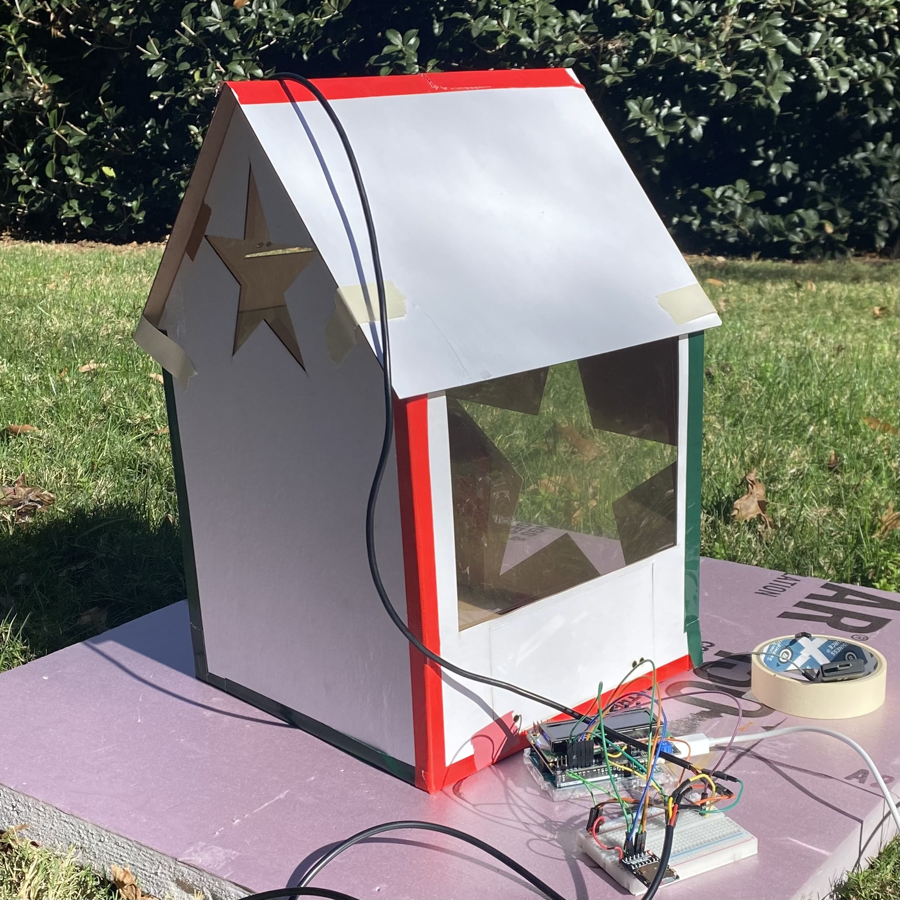

Greenhouse gas emissions have produced widespread, irreversible effects on the environment that will continue to grow. Converting to renewable energy sources, such as solar power, can address this crisis. Wind and solar power alone can generate 100% of the average energy demand in the US, significantly reducing the global impact of fossil fuel consumption.
The primary motivation behind this project is to design and test a solar-powered model building to demonstrate the feasibility of utilizing solar power to regulate temperature.
Total surface area = 0.46 m2
Thermal resistance Rth = 0.38 W/m2
Power loss Qout = 22.4 W (assuming ∆T = 8.5 °C)
Solar vector (in Davidson at noon in December) = 32.5°
Window area = 0.03 m2 (assuming 22.4 W power, 1000 W/m2 solar flux, 0.9 transmission, and 32.5° solar angle)
Using Adobe Illustrator, laser cutter, and matboard
Methods:
Results:
Discussion:
Methods:
Results:
Discussion:
Methods
Results
Added ceramic container with 464 J/°C for a total thermal capacity of 2312 J/°C
Changes
Power Sources
| Power Sinks | ||
|---|---|---|
| Continuous Power (W) | Total Energy (J) | |
| Arduino | 0.41 | 4374 |
| LCD | 0.1 | 1080 |
| SD Card Module | 0.16 | 1728 |
| LEDs (2) | 0.06 | 162 |
| Servo Motor (180) | 0.75 | 8.9 |
| Servo Motor (360) | 0.75 | 40.5 |
Results:
Discussion:
Applications & feasibility: